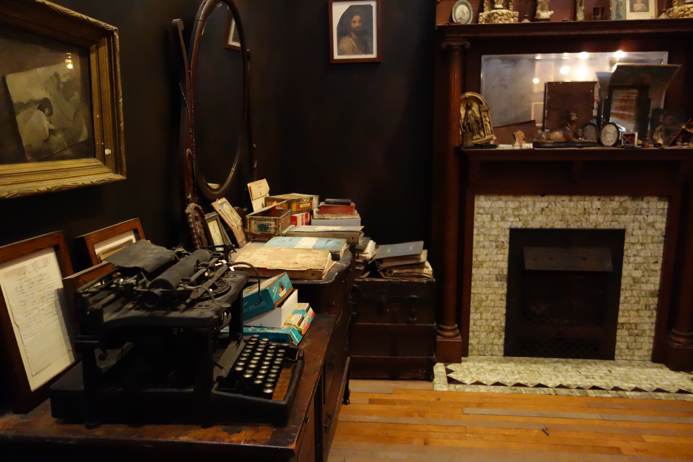
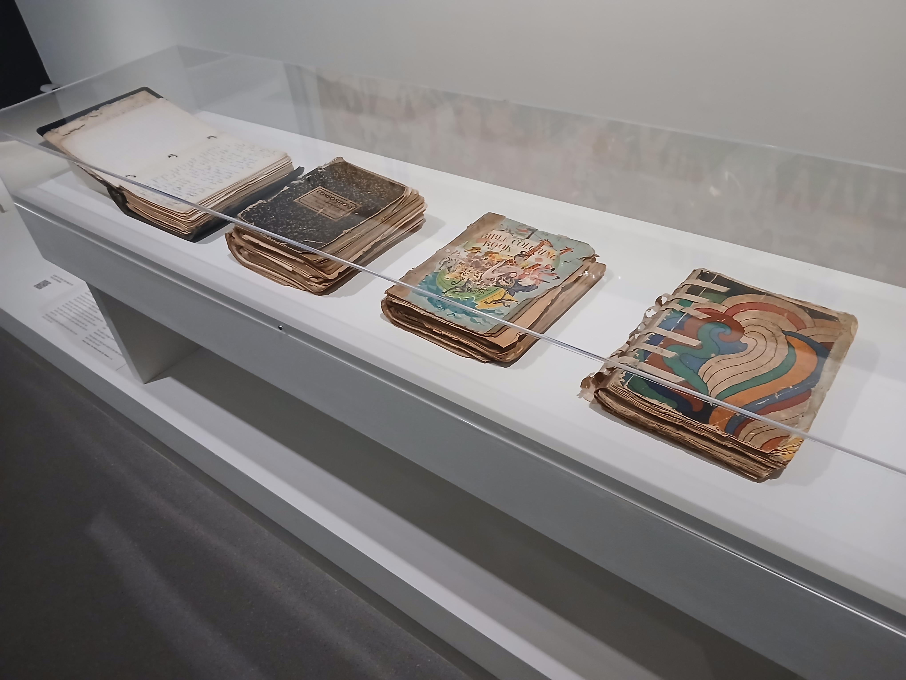
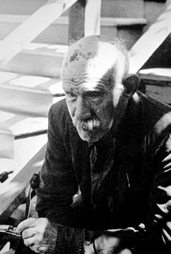

Why Her "Skepticism" Is Actually Deeply Cultural (Spanish *Desengaño*)
In Lesson 01 (10:02), Marinela said: "The world seems to be so terrible lately, so I really want to be in a place that is like being in my own bubble because civilization never learned anything." Henry Darger spent 60 years in a tiny Chicago room creating a secret 15,000-page universe (The Story of the Vivian Girls) because he couldn't bear the cruelty of the adult world.
In Spanish literature and art (Cervantes, Quevedo, Velázquez, Goya), being "unimpressed" by superficial hype is a prized cultural virtue called desengaño (seeing through false illusions to the raw truth). Outsider Art like Darger's was created with zero desire for fame or money.
Notice how Darger combines bright yellow sunflowers and girls in red storybook dresses with dark storm clouds, fleeing across rivers, and war. Connect this to Marinela's Lesson 01 metaphor of going from light into dark and back into light.
Henry Darger & The Story of the Vivian Girls (In the Realms of the Unreal)
Click any painting or archival photograph below to inspect it in full-screen detail. Together we will look at the artwork, read the story behind Darger's secret 60-year "bubble," and debate what makes art truly authentic.
Part A • Visual Gallery: The Paintings, The Manuscripts & The Secret Room
6 Curated Plates Plate 01 • Watercolor Scroll
🔍 Inspect Painting
Plate 01 • Watercolor Scroll
🔍 Inspect Painting
At Jennie Richee: Waiting for the Rain to Stop (The Sisters in Red)
Two of the seven Vivian princesses stand in bright red dresses beside giant yellow blossoms and a quiet farmhouse as a storm gathers overhead.
 Plate 02 • Watercolor Detail
🔍 Inspect Painting
Plate 02 • Watercolor Detail
🔍 Inspect Painting
The Vivian Girls Sheltering Under the Portico
Darger couldn't draw from life, so he collected comic strips and magazines from the street and traced the heroines in yellow and crimson dresses.
 Plate 03 • Panoramic Scroll
🔍 Inspect Painting
Plate 03 • Panoramic Scroll
🔍 Inspect Painting
3 At Jennie Richee: Pursued Down Stream
A pastoral stone bridge and water-lily river where the Vivian Girls flee from the Glandelinian army—blending storybook peace with wartime peril.

Plate 04 • The Artist's Bubble 🔍 Inspect RoomThe Ultimate "Bubble": Darger's Single Room & Typewriter
Nobody ever entered his room for 40 years. On this small wooden desk and typewriter, he wrote 15,145 pages and painted hundreds of scrolls.

Plate 05 • Handmade Books 🔍 Inspect Volumes15 Volumes Hand-Stitched with String
When his landlord Nathan Lerner opened the room in 1973, he found 15 colossal hand-bound encyclopedias of an imaginary planet.
Pages from "The History of My Life"
Every night after mopping hospital floors, Darger wrote in meticulous script, acting as historian, meteorologist, and protector of the Vivian Girls.

The Janitor's Secret Universe: Why Henry Darger Created The Vivian Girls
"To his neighbours in Chicago, Henry Darger (1892–1973) was an invisible old man—a reclusive hospital janitor who wore a frayed coat, attended Mass every morning, and spoke only about the weather. Having survived a brutal childhood in an asylum, Darger had reached a quiet conclusion: the adult world was irredeemably cruel.
So inside his tiny single room, he built an alternative civilization. Across 15,145 typed pages and hundreds of panoramic watercolours—some stretching over three metres wide—he chronicled The Story of the Vivian Girls: seven intrepid princesses in bright dresses who lead a rebellion to rescue enslaved children from a tyrannical adult empire.
Darger never showed his paintings to a single living soul. When he moved into a nursing home shortly before his death, he told his landlord to throw everything in his room into the rubbish. Instead, his clandestine masterpieces were saved—and today they hang in the Museum of Modern Art in New York and the Collection de l'Art Brut in Europe, selling for nearly a million dollars each."
Look closely at Plates 01, 02 & 03. At first glance, you see innocent girls in red dresses, yellow flowers, and water lilies—copied from 1930s children's books. Yet in Darger's story, they are in the middle of a brutal war and approaching storms. Why makes that contrast between childhood innocence and dark danger so psychologically haunting?
In Lesson 01 (10:02), you said: "The world seems to be so terrible lately, so I really want to be in a place that is like being in my own bubble because civilization never learned anything." Looking at Darger's room in Plate 04, do you sympathize with his decision to retreat into his own world—or where is the line between a healthy sanctuary and total isolation?
Darger never wanted anyone to see his inner life and asked his landlord to throw his manuscripts in the bin. Was exhibiting The Vivian Girls in museums an act of cultural rescue, or did the art world violate a vulnerable man's privacy for money and prestige?
Most famous artists create work hoping for applause, followers, or money. Darger painted for 60 years for an audience of zero. Does the fact that he wasn't trying to impress anyone make The Vivian Girls more honest than mainstream contemporary art?
The Anglo-Spanish Cultural Salon: 3 Short Readings
Each reading connects Spanish & British history, architecture, and art to the exact places and ideas you mentioned in Lesson 01. Choose one to read together and debate!
When Renaissance Spain Met Rainy Winchester
"In July 1554, Prince Philip of Spain—raised among the sun-drenched Renaissance palaces of Valladolid and Salamanca—rode into Winchester in the pouring rain to marry Queen Mary I of England inside Winchester Cathedral.
The letters sent home by his Spanish courtiers read like a comedy of cultural disillusionment. Expecting the romantic Britain of King Arthur's legends, the Spaniards were instead appalled by the mud, the bleak summer skies, and a local population that drank thick, lukewarm ale instead of wine.
'The English,' one bewildered Spanish nobleman wrote from Winchester, 'have built magnificent stone cathedrals, yet they live inside a damp fog and regard every foreigner with polite suspicion. Truly, only a madman would trade Castile for this island.' Yet four centuries later, it is precisely that quiet, green melancholy of Hampshire that draws the modern traveller back."
When you visited Winchester two weeks ago, did you know that the King of Spain was married inside Winchester Cathedral (and the chair he sat in is still there)? Why do you think you loved Winchester while Philip II's courtiers hated it?
In 1554, the Spanish complained about British food, warm beer, the rain, and polite restraint. What do Spaniards still complain about when they visit England today—and what do you actually prefer about British culture over Spanish culture?
Spanish culture is famous for brightness, noise, and sun; English culture has a quiet, rainy melancholy. Why can grey skies and quiet stone towns sometimes feel more comforting than endless sunshine?
The Spanish Plaza vs. The English Cloister
"To understand the difference between Spanish and British society, one need only compare the Spanish Renaissance Plaza with the English Collegiate Quad.
A Spanish town is built inside-out: its heart is the open stone plaza, an amphitheatre where citizens are simultaneously actors and spectators. Life is meant to be witnessed—from the evening stroll (el paseo) to the loud, lingering conviviality of the terrace. Solitude in such a town is almost a public offence.
An English historic town like Oxford or Winchester is built on the opposite philosophy: the walled sanctuary. Behind high stone walls lie hidden courtyards, cloisters, and walled gardens designed to shield the individual from the gaze of the crowd. Where the Spanish plaza demands social performance, the English town grants the right to be left alone."
In Lesson 01 (10:02), you compared your Spanish Renaissance hometown to Oxford and talked about wanting to be "in my own bubble." Is Spanish street life sometimes exhausting for someone who values quiet reflection?
In small or historic Spanish towns, do you feel that everyone watches and comments on everyone else's life—whereas in England, people give you more anonymity?
Your American and Asian students probably arrive in Spain thinking Spanish life is one non-stop fiesta on a terrace. What is a deeper truth about Spanish culture that tourists completely miss?
From Velázquez and Goya to the Modern Camera: The Refusal to Flatter
"Why does Spanish art feel so startlingly modern compared to the idealized beauty of the Italian Renaissance or French Romanticism? The answer lies in a uniquely Spanish cultural instinct: desengaño—the lucid refusal to be fooled by pretence or superficial glamour.
When Velázquez painted court jesters and dwarfs at the royal palace, he gave them more psychological dignity and intelligence than the King himself. A century later, when Goya painted the Spanish royal family, he refused to flatter them, exposing their vanity and folly in plain sight.
Today, the finest documentary photographers carry that same unflinching gaze. In an age obsessed with curated perfection and fake optimism, true art does not try to make the world look pretty; it tries to make us see."
Does this explain part of your own personality? Are you someone who naturally dislikes fake enthusiasm and pretence, and prefers honest, unflinching reality?
In Lesson 01 (23:18), you spoke warmly about your American student who was a photographer working with trauma in Black and Indigenous communities. What made her photography or her way of seeing the world feel real to you?
Why do "pretty" Instagram photos of cities leave us feeling nothing, while a dark painting by Goya or a raw black-and-white photograph stays in our memory for years?
Untranslatable Cultural Words: How Do You Explain These to Each Other?
The words a culture invents reveal what that society secretly values or fears. Marinela's Challenge: Explain the cultural psychology of the 3 Spanish concepts to a British person. Louie's Challenge: Explain the 3 British concepts to Marinela!
1. El Desengaño (Golden Age Literature)
Cervantes / QuevedoIn English, "disappointment" is always negative. Why is desengaño (waking up from illusions / seeing the world without rose-tinted glasses) considered a form of wisdom in Spanish culture?
2. Tener Duende (Lorca & Flamenco)
Art & SoulFederico García Lorca said duende is not about technical perfection—it is a dark, raw emotion that rises from the soles of the feet when art confronts mortality. How would you explain duende to a British student?
3. Vergüenza Ajena
Social PsychologyEnglish had to borrow the slang word "cringe" or say second-hand embarrassment, whereas Spanish has had vergüenza ajena for centuries. What kind of behaviour gives you vergüenza ajena?
1. "Muddling Through"
The British distrust grand master plans and dramatic theories. They take pride in muddling through—managing calmly and imperfectly without making a fuss, even when things are a mess.
2. "Taking the Mickey" (Self-Deprecation)
In Britain, boasting about your achievements is social suicide; the higher your status, the more you are expected to make fun of yourself (self-deprecation). And if British colleagues tease you gently, it means they actually like you!
3. "Eccentricity" vs. Conformity
Why is Britain simultaneously so polite and rule-obsessed about queuing, yet so tolerant of eccentric professors, artists, and people who live happily in their own strange bubble?
The Cultural Skeptic's Dilemma: Authentic Heritage vs. Cultural Theme Park
Both Spain and England suffer from the same modern cultural problem: historic places (like Ibiza, Barcelona, Oxford, and Bath) risk turning into museums or theme parks for tourists. Debate these 3 cultural dilemmas together!
When a Historic Town Becomes a Postcard
Your hometown comes from the Spanish Renaissance, and you loved Winchester and Ibiza. At what point does a historic town stop being a real, living community and become a soulless backdrop for tourists? Has your hometown escaped that fate?
Searching for Ancestors & Roots
In Lesson 01 (23:18), you helped an American student find her Spanish grandmother's ancestors in northern Spain. Why are North Americans often so passionate about tracing their 19th-century European roots, while Europeans rarely look up their family tree?
Teaching Language Without Clichés
Many Spanish textbooks are full of superficial clichés (paella, sangria, flamenco, Gaudí). When you teach Spanish to adults from China, Japan, or the US, what real aspects of Spanish history, art, or mentality do you wish textbooks included instead?
Expats & Outsiders: Compare How We Live Abroad
In Lesson 01 (10:36), Louie said: "I think it's a duty if you live in a country to speak the language." Let's compare how British expats behave in Spain vs. how you plan to live in England!
The "Sunny Bubble" Expats Who Never Learn Spanish
Hundreds of thousands of British retirees and expats live on the Spanish coast and in Ibiza. Many live there for 15 years, eat at British pubs, and barely speak A1 Spanish—yet when they do join a Spanish class, you mentioned (21:52) that older retired students can actually be fascinating people training their minds against Alzheimer's.
Immersion vs. Keeping Your Own Cultural Identity
When you move to England next year to teach Spanish, your job will be to represent Spanish language and culture all day—while living inside British culture after work.
Louie's Hanoi Rooftop Photo / Video
If you want to briefly show the rooftop view of Vietnamese street culture you mentioned last time, load your file here.